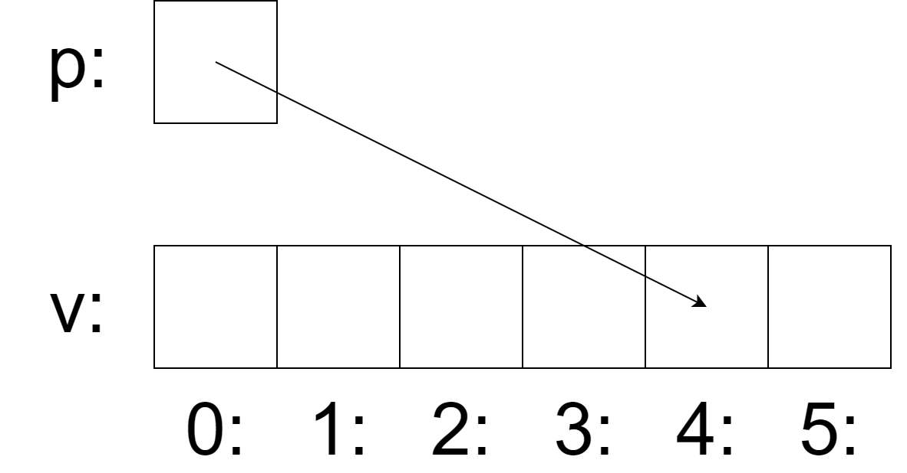

Introduction to C++
A tour of C++ - Bjarne Stroustrup (Chapters 1, 2 and 3)
Before C++, there was C
- The C language was developed in 1972 by Dennis Ritchie at Bell labs
- C was invented for writing operating systems
- Primary goals:
- produce a minimalistic language that was easy to compile
- allow efficient access to memory
- produce efficient code
- do not need extensive run-time support
- For a high-level language, it was designed to be fairly low-level
- Platform-independent programming
C’s Impact on Computing
- C ended up being so efficient and flexible that in 1973, Ritchie and Ken Thompson rewrote most of the UNIX operating system using C
- Many previous operating systems had been written in assembly
- Unlike assembly, which ties a program to a specific CPU, C’s excellent portability allowed UNIX to be recompiled on many different types of computers speeding its adoption
- Thanks to the portability of UNIX, C becomes very popular
- In 1978, Brian Kernighan and Dennis Ritchie published “The C Programming Language”
- This book caused a revolution in the computing world
C Standardization
- In 1983, the American National Standards Institute (ANSI) established a committee to provide a modern, comprehensive definition of C
- The resulting definition, the ANSI standard, or “ANSI C”, was completed in 1989
- In 1990 the International Standardization Organization (ISO) adopted ANSI C (with a few minor modifications)
- This version of C became known as C90
- Compilers eventually became ANSI C/C90 compliant, and programs desiring maximum portability were coded to this standard
History of C++
C++ Origins
- Was developed by Bjarne Stroustrup at Bell Labs as an extension to C, starting in 1979
- New features: classes, member functions, derived classes, separate compilation, public and private access control, friends, type checking of function arguments, default arguments, inline functions, overloaded assignment operator, constructors, destructors…
- Formerly known as “C with Classes”
- In 1983, the name of the language changes from “C with classes” to “C++”
- The
++operator in the C language is an operator for incrementing a variable - The purpose of C++ is to make writing good programs easier and more pleasant for the individual programmer
C++ Evolution Timeline
- The first edition of Stroustrup’s book, “The C++ Programming Language”, was published in early 1986
- After the release of Version 2.0 in 1989, C++ was rapidly acknowledged as a serious, useful language
- In 1997, a committee of the American National Standards Institute (ANSI) completed and published internally the Draft Standard - “The C++ Language”
- The third edition of Stroustrup’s book, was published in 1997 and is widely regarded as the definitive C++ reference
- C++ was ratified in 1998 by the ISO committee, and again in 2003 (called C++03)
- Major updates: C++11 (2011), C++14 (2014), C++17 (2017), C++20 (2020), C++23 (2023)
About C++
C++ Characteristics
- C++ is object oriented
- C++ is statically typed
- C++ is one of the predominant languages for the development of all kinds of technical and commercial software
- C++ has been used to develop other types of programming tools
- C++ was built for speed and portability
- C++ is a compiler-type programming language: the source code is translated (compiled) into an intermediary form (Object file); different object files are combined into an executable program by a Linker
Deployment Cycle

Image from: http://www.w3processing.com
C++ Compiling Process
- A C++ program typically consists of many source code files (usually simply called source files)
- There are two kinds of source code files:
- header files, which contain constants, declarations and redefined types and have
.hppextension (preferred) or.h - source files, which contain the implementation code for any declaration done in the header files, and have
.cppextension
- header files, which contain constants, declarations and redefined types and have
- Each source file is processed by the preprocessor, generating a text file
- The text file is processed by the compiler (it is compiled) generating an object code (assembler) file
- All the object files are combined by a linker, yielding an executable file
C++ Compiling Cycle

C++ Programs Portability
- An executable program is created for a specific hardware/system combination: it is not portable, say, from a Mac to a Windows PC
- When we talk about portability of C++ programs, we usually mean portability of source code: the source code can be successfully compiled and run on a variety of systems
- The ISO C++ standard defines two kinds of entities:
- Core language features, such as built-in types (e.g.,
charandint) and loops (e.g.,for-statements andwhile-statements) - Standard-library components, such as containers (e.g.,
vectorandmap) and I/O operations (e.g.,<<andgetline())
- Core language features, such as built-in types (e.g.,
Hello World
The Minimal C++ Program
- The minimal C++ program is:
- This defines a function called
main, which takes no arguments and does nothing - Curly braces,
{ }, express grouping in C++ - Double slash,
//, begins a comment that extends to the end of the line - The
intvalue returned bymain, if any, is the program’s return value to “the system” - If no value is returned, the system will receive a value indicating successful completion
- A nonzero value from
main()indicates failure
Hello World Program
- Typically, a program produces some output
- Here is a program that writes
Hello, World!:
- The line
#include <iostream>instructs the compiler to include the declarations of the standard stream I/O facilities - Without these declarations, the expression
std::cout << "Hello, World!\n"would make no sense - The operator
<<(“put to”) writes its second argument onto its first - In this case, the string literal
"Hello, World!\n"is written onto the standard output streamstd::cout
String Literals and Special Characters
- A string literal is a sequence of characters surrounded by double quotes
- In a string literal, the backslash character
\followed by another character denotes a single “special character” - In this case,
\nis the newline character, so that the characters written are Hello, World! followed by a newline
This is equivalent to:
Using Namespace std
The std:: specifies that the name cout is to be found in the standard-library namespace.
This is similar to:
Functions Example
Essentially, all executable code is placed in functions and called directly or indirectly from main():
#include <iostream>
#include <cmath>
double square(double x) {
return x * x;
}
void print_square(double x) {
std::cout << "The square of " << x << " is " << square(x) << "\n";
}
int main() {
print_square(1.234); // prints: The square of 1.234 is 1.52276
return 0;
}A “return type” void indicates that a function does not return a value.
Types, Variables and Arithmetic
Basic Concepts
- Every name and every expression has a type that determines the operations that may be performed on it
- For example, the declaration
int inch;specifies thatinchis of typeint; that is,inchis an integer variable - A declaration is a statement that introduces a name into the program
- It specifies a type for the named entity:
- A type defines a set of possible values and a set of operations (for an object)
- An object is some memory that holds a value of some type
- A value is a set of bits interpreted according to a type
- A variable is a named object
Fundamental Types
C++ offers a variety of fundamental types:
bool // Boolean, possible values are true or false
char // character, for example, 'a', 'z' and '9'
int // integer, for example, -273, 42 and 1066
double // double-precision floating-point number
float // single-precision floating-point number
unsigned // non-negative integer, for example, 0, 1, and 999Each fundamental type corresponds directly to hardware facilities and has a fixed size that determines the range of values that can be stored in it.
Type Sizes Visualization
bool: [ ]
char: [ ]
int: [ ][ ][ ][ ]
double: [ ][ ][ ][ ][ ][ ][ ][ ]- A
charvariable is of the natural size to hold a character on a given machine (typically an 8-bit byte) - Sizes of other types are quoted in multiples of the size of a
char - The size of a type is implementation-defined and can be obtained by the
sizeofoperator - For example,
sizeof(char)equals1andsizeof(int)is often4
Type Sizes Table
| Name | Description | Size | Range |
|---|---|---|---|
bool |
Boolean value | 1 byte | true or false |
char |
Character or small integer | 1 byte | signed: -128 to 127 unsigned: 0 to 255 |
short int |
Short integer | 2 bytes | signed: -32768 to 32767 unsigned: 0 to 65535 |
int |
Integer | 4 bytes | signed: -2147483648 to 2147483647 unsigned: 0 to 4294967295 |
long int |
Long integer | 4 bytes | signed: -2147483648 to 2147483647 unsigned: 0 to 4294967295 |
float |
Floating point number | 4 bytes | 3.4e +/- 38 (7 digits) |
double |
Double precision floating point number | 8 bytes | 1.7e +/- 308 (15 digits) |
Modern C++ Size Checking
#include <iostream>
#include <limits>
int main() {
std::cout << "Type sizes on this system:\n";
std::cout << "bool: " << sizeof(bool) << " bytes\n";
std::cout << "char: " << sizeof(char) << " bytes\n";
std::cout << "short: " << sizeof(short) << " bytes\n";
std::cout << "int: " << sizeof(int) << " bytes\n";
std::cout << "long: " << sizeof(long) << " bytes\n";
std::cout << "long long: " << sizeof(long long) << " bytes\n";
std::cout << "float: " << sizeof(float) << " bytes\n";
std::cout << "double: " << sizeof(double) << " bytes\n";
// Modern C++ way to check ranges
std::cout << "\nInt range: " << std::numeric_limits<int>::min()
<< " to " << std::numeric_limits<int>::max() << "\n";
return 0;
}Arithmetic Operators
The arithmetic operators can be used for appropriate combinations of these types:
Comparison Operators
Logical Operators
Type Conversions
In assignments and arithmetic operations, C++ performs meaningful conversions between the basic types:
Modern C++ Initialization
C++ offers various initialization syntaxes, with uniform initialization being preferred:
// Traditional initialization
double d1 = 2.3;
// Uniform initialization (preferred in modern C++)
double d2{2.3};
int i1{42};
std::string s1{"Hello"};
// Complex types
std::vector<int> numbers{1, 2, 3, 4, 5};
std::pair<int, std::string> data{42, "answer"};
// The = is optional with {}
std::complex<double> z3 = {1, 2};
std::complex<double> z4{1, 2}; // equivalentSafe Initialization
The uniform initialization syntax prevents narrowing conversions:
int i1 = 7.2; // i1 becomes 7 (data loss, but allowed)
int i2{7.2}; // error: narrowing conversion not allowed
int i3 = {7.2}; // error: narrowing conversion not allowed
// This helps catch potential bugs at compile time
double pi = 3.14159;
int radius{pi}; // Compilation error - prevents accidental data lossAuto Type Deduction
When defining a variable, you don’t need to state its type explicitly when it can be deduced:
When to Use Auto
- Use
autowhere you don’t have a specific reason to mention the type explicitly - Avoid
autowhen:- The definition is in a large scope where you want the type clearly visible
- You want to be explicit about a variable’s range or precision (e.g.,
doublerather thanfloat)
- Using
autoavoids redundancy and long type names - Especially important in generic programming and with complex template types
Assignment Operators
C++ offers specific operators for modifying variables:
Scope and Lifetime
Scope Overview
- The scope of a name is the area of the code where that name can be used
- The scope of any name is basically the block in which it is defined
- A declaration introduces its name into a scope:
- Local scope
- Class scope
- Namespace scope
Local Scope
- A name declared in a function or lambda is called a local name
- Its scope extends from its point of declaration to the end of the block in which its declaration occurs
- A block is delimited by a
{}pair - Function argument names are considered local names
Class Scope
- A name is called a member name (or class member name) if it is defined in a class
- Its scope extends from the opening
{of its enclosing declaration to the end of that declaration
Namespace Scope
- A name is called a namespace member name if it is defined in a namespace
- Its scope extends from the point of declaration to the end of its namespace
- A name not declared inside any other construct is called a global name and is said to be in the global namespace
std::vector<int> global_vec; // global (in global namespace)
namespace MyNamespace {
int namespace_var = 42; // namespace scope
}
struct Record {
std::string name; // member scope
};
void function(int arg) { // function is global, arg is local
std::string motto{"Who dares wins"}; // motto is local
auto p = std::make_unique<Record>(); // p is local, object on heap
}Object Lifetime
- An object must be constructed (initialized) before it is used and will be destroyed at the end of its scope
- For a namespace object, the point of destruction is the end of the program
- For a member, the point of destruction is determined by the point of destruction of the object of which it is a member
- Modern C++ prefers smart pointers over raw
new/delete
Static Local Variables
The static local variables persist between function calls:
#include <iostream>
void test_function() {
static int run_count = 0; // initialized only once
std::cout << "Ran this function " << ++run_count << " times\n";
} // run_count persists but is not accessible outside
int main() {
test_function(); // Output: Ran this function 1 times
test_function(); // Output: Ran this function 2 times
test_function(); // Output: Ran this function 3 times
return 0;
}Constants
Const vs Constexpr
C++ supports two notions of immutability:
const
- Means “I promise not to change this value”
- Used primarily to specify interfaces
- Allows passing data to functions without fear of modification
- The compiler enforces the promise made by
const
constexpr
- Means “to be evaluated at compile time”
- Used to specify constants
- Allows placement of data in readonly memory
- Better performance through compile-time computation
Const and Constexpr Examples
const int dmv = 17; // dmv is a named constant
int var = 17; // var is not a constant
constexpr double max1 = 1.4 * square(dmv); // OK if square(17) is constant expression
constexpr double max2 = 1.4 * square(var); // error: var is not constant expression
const double max3 = 1.4 * square(var); // OK, may be evaluated at run time
double sum(const std::vector<double>&); // sum will not modify its argument
std::vector<double> v{1.2, 3.4, 4.5}; // v is not a constant
const double s1 = sum(v); // OK: evaluated at run time
constexpr double s2 = sum(v); // error: sum(v) not constant expressionConstexpr Functions
For a function to be usable in a constant expression, it must be defined constexpr:
constexpr double square(double x) {
return x * x;
}
constexpr double cube(double x) {
return x * x * x;
}
// Modern C++ allows more complex constexpr functions
constexpr int factorial(int n) {
return (n <= 1) ? 1 : n * factorial(n - 1);
}
// Usage
constexpr double area = square(5.0); // computed at compile time
constexpr int fact5 = factorial(5); // computed at compile time
int runtime_value = 10;
double runtime_area = square(runtime_value); // computed at runtimeModern C++ Constants
#include <iostream>
#include <string_view>
// Modern way to define constants
inline constexpr int MAX_SIZE = 100;
inline constexpr double PI = 3.14159265359;
inline constexpr std::string_view APP_NAME = "MyApplication";
// Constexpr with user-defined types (C++11+)
struct Point {
constexpr Point(double x, double y) : x_(x), y_(y) {}
constexpr double distance_from_origin() const {
return std::sqrt(x_ * x_ + y_ * y_);
}
private:
double x_, y_;
};
constexpr Point origin{0.0, 0.0};
constexpr Point p{3.0, 4.0};
constexpr double dist = p.distance_from_origin(); // Computed at compile timeArrays, Pointers and References
Arrays
An array of elements can be declared like this:
- In declarations,
[]means “array of” - All arrays have 0 as their lower bound, so
vhas six elements:v[0]tov[5] - The size of an array must be a constant expression
Range-Based For Loop
C++ offers a simpler for-statement, called range-for-statement:
Modern C++ Arrays
#include <array>
#include <vector>
#include <iostream>
int main() {
// C-style array (avoid in modern C++)
int c_array[5]{1, 2, 3, 4, 5};
// std::array (preferred for fixed-size arrays)
std::array<int, 5> modern_array{1, 2, 3, 4, 5};
// std::vector (preferred for dynamic arrays)
std::vector<int> dynamic_array{1, 2, 3, 4, 5};
// Range-based loops work with all
for (const auto& element : modern_array) {
std::cout << element << " ";
}
// Modern arrays have size() method
std::cout << "Array size: " << modern_array.size() << "\n";
return 0;
}Pointers
Pointer Fundamentals
- “A pointer is a variable that contains the address of a variable” [Kernighan and Ritchie, 1988]
- The pointer is a mechanism for direct memory manipulation
- A pointer variable holds the address of an object
- When we say that a pointer is “pointing to a certain object”, this means that the pointer variable is storing the memory address where the pointed object is
Pointer Declaration and Usage
A pointer can be declared like this:
A pointer variable holds the address of an object of the appropriate type:
Pointer Example with Memory Addresses
#include <iostream>
int main() {
int a = 27; // a = 27
int* p = &a; // p stores the address of a
std::cout << "Pointer p stores address: " << p << "\n";
std::cout << "Variable a is at address: " << &a << "\n";
std::cout << "Content pointed by p: " << *p << "\n";
std::cout << "Pointer p is stored at: " << &p << "\n";
return 0;
}Function Parameters: Pass by Value vs Pointer
void swap(int* a, int* b) {
int aux = *a;
*a = *b;
*b = aux;
}
int main() {
int a = 3, b = 2;
std::cout << "Before swap: a = " << a << " b = " << b << "\n";
swap(&a, &b);
std::cout << "After swap: a = " << a << " b = " << b << "\n";
return 0;
}
// Output: Before swap: a = 3 b = 2
// After swap: a = 2 b = 3Null Pointer: nullptr
- We try to ensure that a pointer always points to an object, so that dereferencing it is valid
- When we don’t have an object to point to or need to represent “no object available”, we give the pointer the value
nullptr - There is only one
nullptrshared by all pointer types
Safe Pointer Usage
#include <iostream>
#include <cstring>
int count_char(const char* p, char target) {
// Always check for nullptr
if (p == nullptr) {
return 0;
}
int count = 0;
for (; *p != '\0'; ++p) { // C-style string iteration
if (*p == target) {
++count;
}
}
return count;
}
int main() {
const char* text = "Hello, World!";
std::cout << "Number of 'l' characters: " << count_char(text, 'l') << "\n";
// Safe with nullptr
std::cout << "Number in nullptr: " << count_char(nullptr, 'l') << "\n";
return 0;
}References
Reference Fundamentals
- In a declaration, the unary suffix
&means “reference to” - A reference is similar to a pointer, except you don’t need to use a prefix
*to access the value - A reference cannot be made to refer to a different object after its initialization
- References must be initialized when declared
References with Functions
References are particularly useful for function parameters:
#include <vector>
#include <iostream>
// Pass by reference - can modify the original
void sort_vector(std::vector<double>& v) {
std::sort(v.begin(), v.end());
}
// Pass by const reference - cannot modify, avoids copying
double sum(const std::vector<double>& v) {
double total = 0.0;
for (const auto& element : v) {
total += element;
}
return total;
}
int main() {
std::vector<double> numbers{3.14, 2.71, 1.41, 1.73};
std::cout << "Sum: " << sum(numbers) << "\n"; // No copy made
sort_vector(numbers); // Original vector is sorted
return 0;
}Range-Based For with References
If we didn’t want to copy values, but rather just have the loop variable refer to elements:
std::array<int, 5> v{0, 1, 2, 3, 4};
// Copy each element (not efficient for large objects)
for (auto x : v) {
std::cout << x << " ";
}
// Reference each element (no copying)
for (auto& x : v) {
++x; // Modify the original elements
}
// Const reference (read-only, no copying)
for (const auto& x : v) {
std::cout << x << " ";
}Output after modification:
1 2 3 4 5Swap Function Comparison
void swap(int& a, int& b) {
int aux = a;
a = b;
b = aux;
}
int main() {
int a = 3, b = 2;
std::cout << "Before: a = " << a << " b = " << b << "\n";
swap(a, b); // Clean syntax, no & needed
std::cout << "After: a = " << a << " b = " << b << "\n";
}
// Output: Before: a = 3 b = 2
// After: a = 2 b = 3User-Defined Types
Introduction to User-Defined Types
- The types that can be built from fundamental types,
constmodifier, and declarator operators are built-in types - C++’s set of built-in types and operations is rich, but deliberately low-level
- They don’t provide high-level facilities for advanced applications
- C++ augments built-in types with sophisticated abstraction mechanisms
- Types built using these mechanisms are called user-defined types
- They are referred to as classes and enumerations
Structures
Basic Structure Definition
The first step to build a new type is often to organize elements into a data structure:
This defines what makes a Player object - it has a std::string for the name, an int for hit points, and a double for experience.
Using Structures
#include <iostream>
#include <string>
struct Player {
std::string name;
int hp;
double experience = 0.0; // Default member initialization (C++11)
};
int main() {
// Different ways to create and initialize
Player me; // Default construction
me.name = "Peter";
me.hp = 100;
Player hero{"Alice", 150, 25.5}; // Aggregate initialization
Player mage{.name = "Gandalf", .hp = 80, .experience = 100.0}; // Designated initializers (C++20)
std::cout << "Player: " << hero.name << ", HP: " << hero.hp << "\n";
return 0;
}Structure Member Access
We use . (dot) to access struct members through a name and -> through a pointer:
void process_player(Player p, Player& rp, Player* pp) {
// Access through value (copy)
int hp1 = p.hp;
// Access through reference
int hp2 = rp.hp;
rp.hp = 200; // Modifies original
// Access through pointer
int hp3 = pp->hp;
pp->name = "New Name"; // Modifies original
// Equivalent to: (*pp).hp = 150;
}Modern Structure with Methods
#include <iostream>
#include <string>
struct Player {
std::string name;
int hp = 100;
int max_hp = 100;
// Member functions
void heal(int amount) {
hp = std::min(hp + amount, max_hp);
}
bool is_alive() const {
return hp > 0;
}
void take_damage(int damage) {
hp = std::max(0, hp - damage);
}
double health_percentage() const {
return static_cast<double>(hp) / max_hp * 100.0;
}
};
int main() {
Player hero{"Aragorn", 120, 120};
std::cout << "Health: " << hero.health_percentage() << "%\n";
hero.take_damage(30);
std::cout << "After damage: " << hero.health_percentage() << "%\n";
hero.heal(10);
std::cout << "After healing: " << hero.health_percentage() << "%\n";
return 0;
}Classes
Class Definition
A class is a set of members:
- data members
- function members
- type members
- Interface is defined by
publicmembers privatemembers are accessible only through that interface
Vector Class Example
#include <memory>
#include <stdexcept>
class Vector {
public:
explicit Vector(int s) : elem{std::make_unique<double[]>(s)}, sz{s} {}
double& operator[](int i) {
if (i < 0 || i >= sz) {
throw std::out_of_range("Vector index out of range");
}
return elem[i];
}
const double& operator[](int i) const {
if (i < 0 || i >= sz) {
throw std::out_of_range("Vector index out of range");
}
return elem[i];
}
int size() const { return sz; }
private:
std::unique_ptr<double[]> elem; // Smart pointer for automatic cleanup
int sz; // Number of elements
};Vector Usage
#include <iostream>
int main() {
Vector v(6); // Create vector with 6 elements
// Initialize elements
for (int i = 0; i < v.size(); ++i) {
v[i] = i * 1.1;
}
// Print elements
for (int i = 0; i < v.size(); ++i) {
std::cout << "v[" << i << "] = " << v[i] << "\n";
}
return 0;
} // Vector automatically cleaned up (RAII)
Modern Vector with RAII
#include <memory>
#include <initializer_list>
#include <algorithm>
class Vector {
public:
// Constructor
explicit Vector(int s) : elem{std::make_unique<double[]>(s)}, sz{s} {
std::fill(elem.get(), elem.get() + sz, 0.0);
}
// Initializer list constructor (C++11)
Vector(std::initializer_list<double> init)
: elem{std::make_unique<double[]>(init.size())}, sz{init.size()} {
std::copy(init.begin(), init.end(), elem.get());
}
// Move constructor (C++11)
Vector(Vector&& other) noexcept
: elem{std::move(other.elem)}, sz{other.sz} {
other.sz = 0;
}
// Move assignment (C++11)
Vector& operator=(Vector&& other) noexcept {
if (this != &other) {
elem = std::move(other.elem);
sz = other.sz;
other.sz = 0;
}
return *this;
}
double& operator[](int i) { return elem[i]; }
const double& operator[](int i) const { return elem[i]; }
int size() const { return sz; }
// Range-based for loop support
double* begin() { return elem.get(); }
double* end() { return elem.get() + sz; }
const double* begin() const { return elem.get(); }
const double* end() const { return elem.get() + sz; }
private:
std::unique_ptr<double[]> elem;
int sz;
};
// Usage
Vector v1{1.1, 2.2, 3.3, 4.4}; // Initializer list
for (auto& x : v1) { // Range-based for loop
x *= 2;
}Struct vs Class
- There is no fundamental difference between a
structand aclass - A
structis simply aclasswith memberspublicby default - A
classhas membersprivateby default - You can define constructors and member functions for both
- Convention: use
structfor simple data holders,classfor more complex types
Enumerations
Basic Enumerations
C++ supports enumerations for representing small sets of named values:
enum class Color { red, blue, green };
enum class Traffic_light { green, yellow, red };
Color col = Color::red;
Traffic_light light = Traffic_light::red;- Enumerators (e.g.,
red) are in the scope of theirenum class - This allows reuse of names in different
enum classes Color::redis different fromTraffic_light::red
Type Safety with Enum Classes
- Enumerations represent small sets of integer values
- Make code more readable and less error-prone
- The
classkeyword makes them strongly typed and scoped - Prevents accidental misuse of constants
Modern Enum Classes
#include <iostream>
#include <string>
enum class Status {
pending = 1,
processing = 2,
completed = 3,
failed = 4
};
enum class Priority : char { // Specify underlying type
low = 'L',
medium = 'M',
high = 'H',
critical = 'C'
};
std::string status_to_string(Status s) {
switch (s) {
case Status::pending: return "Pending";
case Status::processing: return "Processing";
case Status::completed: return "Completed";
case Status::failed: return "Failed";
default: return "Unknown";
}
}
int main() {
Status current = Status::processing;
std::cout << "Current status: " << status_to_string(current) << "\n";
// Can get underlying value with static_cast
std::cout << "Status code: " << static_cast<int>(current) << "\n";
return 0;
}Enum Operators
By default, enum classes have limited operations, but we can define operators:
enum class Direction { north, east, south, west };
// Overload ++ operator for cycling through directions
Direction& operator++(Direction& d) {
switch (d) {
case Direction::north: return d = Direction::east;
case Direction::east: return d = Direction::south;
case Direction::south: return d = Direction::west;
case Direction::west: return d = Direction::north;
}
return d; // Should never reach here
}
// Usage
Direction current = Direction::north;
++current; // current is now Direction::eastScoped vs Unscoped Enums
Unions
Union Fundamentals
- A
unionis astructwhere all members are allocated at the same memory address - The
unionoccupies only the space necessary to store its largest member - Only holds a value for one member at a time
- Useful for memory-efficient storage of alternatives
Tagged Union Example
Consider this traditional approach with wasted space:
Better Union Approach
#include <iostream>
#include <string>
enum class ValueType { string_type, int_type };
union ValueData {
std::string str_val;
int int_val;
ValueData() {} // Default constructor
~ValueData() {} // Destructor (manual cleanup needed)
};
struct Entry {
std::string name;
ValueType type;
ValueData data;
// Constructor for string
Entry(std::string n, std::string s) : name{std::move(n)}, type{ValueType::string_type} {
new(&data.str_val) std::string{std::move(s)};
}
// Constructor for int
Entry(std::string n, int i) : name{std::move(n)}, type{ValueType::int_type} {
data.int_val = i;
}
// Destructor
~Entry() {
if (type == ValueType::string_type) {
data.str_val.~basic_string();
}
}
};Modern Alternative: std::variant
#include <variant>
#include <string>
#include <iostream>
struct ModernEntry {
std::string name;
std::variant<std::string, int> value; // Type-safe union
ModernEntry(std::string n, std::string s)
: name{std::move(n)}, value{std::move(s)} {}
ModernEntry(std::string n, int i)
: name{std::move(n)}, value{i} {}
};
void print_entry(const ModernEntry& entry) {
std::cout << "Name: " << entry.name << ", Value: ";
std::visit([](const auto& val) {
std::cout << val;
}, entry.value);
std::cout << "\n";
}
int main() {
ModernEntry e1{"greeting", std::string{"Hello"}};
ModernEntry e2{"count", 42};
print_entry(e1);
print_entry(e2);
return 0;
}Modularity
Separation of Interface and Implementation
- A C++ program consists of functions, user-defined types, class hierarchies, and templates
- The programmer should clearly define interactions among these parts
- The first step is to distinguish between the interface and its implementation
- At the language level, C++ represents interfaces by declarations
- A declaration specifies all that’s needed to use a function or type
Interface Example
// Interface declarations
double sqrt(double); // square root function
class Vector {
public:
explicit Vector(int s);
double& operator[](int i);
const double& operator[](int i) const;
int size() const;
private:
std::unique_ptr<double[]> elem; // implementation detail
int sz; // implementation detail
};Implementation Example
The implementations are separate from the interface:
// Implementation
#include <cmath>
double sqrt(double d) {
// Implementation using algorithm from math textbook
// ... complex mathematical algorithm ...
return std::sqrt(d); // or use library implementation
}
Vector::Vector(int s) : elem{std::make_unique<double[]>(s)}, sz{s} {
if (s < 0) throw std::invalid_argument("Vector size must be non-negative");
}
double& Vector::operator[](int i) {
if (i < 0 || i >= sz) throw std::out_of_range("Vector index out of bounds");
return elem[i];
}
const double& Vector::operator[](int i) const {
if (i < 0 || i >= sz) throw std::out_of_range("Vector index out of bounds");
return elem[i];
}
int Vector::size() const {
return sz;
}Separate Compilation
Modular Programming
- C++ supports separate compilation where user code sees only declarations
- Definitions are in separate source files and compiled separately
- Organizes programs into semi-independent code fragments
- Minimizes compilation times
- Enforces separation of logically distinct parts
- Libraries are often separately compiled code fragments
Header and Source Files
#ifndef VECTOR_HPP
#define VECTOR_HPP
#include <memory>
class Vector {
public:
explicit Vector(int s);
Vector(const Vector& other); // Copy constructor
Vector(Vector&& other) noexcept; // Move constructor
Vector& operator=(const Vector& other); // Copy assignment
Vector& operator=(Vector&& other) noexcept; // Move assignment
~Vector() = default; // Destructor
double& operator[](int i);
const double& operator[](int i) const;
int size() const;
private:
std::unique_ptr<double[]> elem;
int sz;
};
#endif // VECTOR_HPP#include "Vector.hpp"
#include <stdexcept>
#include <algorithm>
Vector::Vector(int s) : elem{std::make_unique<double[]>(s)}, sz{s} {
if (s < 0) {
throw std::invalid_argument("Vector size must be non-negative");
}
}
Vector::Vector(const Vector& other)
: elem{std::make_unique<double[]>(other.sz)}, sz{other.sz} {
std::copy(other.elem.get(), other.elem.get() + sz, elem.get());
}
Vector::Vector(Vector&& other) noexcept
: elem{std::move(other.elem)}, sz{other.sz} {
other.sz = 0;
}
Vector& Vector::operator=(const Vector& other) {
if (this != &other) {
auto new_elem = std::make_unique<double[]>(other.sz);
std::copy(other.elem.get(), other.elem.get() + other.sz, new_elem.get());
elem = std::move(new_elem);
sz = other.sz;
}
return *this;
}
Vector& Vector::operator=(Vector&& other) noexcept {
if (this != &other) {
elem = std::move(other.elem);
sz = other.sz;
other.sz = 0;
}
return *this;
}
double& Vector::operator[](int i) {
if (i < 0 || i >= sz) {
throw std::out_of_range("Vector index out of bounds");
}
return elem[i];
}
const double& Vector::operator[](int i) const {
if (i < 0 || i >= sz) {
throw std::out_of_range("Vector index out of bounds");
}
return elem[i];
}
int Vector::size() const {
return sz;
}#include "Vector.hpp"
#include <cmath>
#include <iostream>
double sqrt_sum(const Vector& v) {
double sum = 0.0;
for (int i = 0; i < v.size(); ++i) {
sum += std::sqrt(v[i]);
}
return sum;
}
int main() {
Vector v(5);
for (int i = 0; i < v.size(); ++i) {
v[i] = i + 1; // 1, 2, 3, 4, 5
}
std::cout << "Square root sum: " << sqrt_sum(v) << "\n";
return 0;
}Compilation Dependencies

The code in user.cpp and Vector.cpp shares the Vector interface information presented in Vector.hpp, but the two files are otherwise independent and can be separately compiled.
Namespaces
Namespace Purpose
- C++ offers namespaces as a mechanism for expressing that declarations belong together
- Prevents name conflicts between different parts of programs
- The simplest way to access a name in another namespace is to qualify it with the namespace name
- The
main()function is defined in the global namespace
Using Namespaces
#include <iostream>
#include <vector>
#include <string>
// Global namespace
int global_var = 42;
namespace Graphics {
struct Point {
double x, y;
Point(double x, double y) : x{x}, y{y} {}
};
void draw_point(const Point& p) {
std::cout << "Drawing point at (" << p.x << ", " << p.y << ")\n";
}
}
namespace Math {
constexpr double PI = 3.14159265359;
double area_of_circle(double radius) {
return PI * radius * radius;
}
}
int main() {
Graphics::Point p{3.0, 4.0};
Graphics::draw_point(p);
double area = Math::area_of_circle(2.5);
std::cout << "Circle area: " << area << "\n";
return 0;
}Using Declarations and Directives
#include <iostream>
#include <string>
namespace MyLibrary {
void function1() { std::cout << "Function 1\n"; }
void function2() { std::cout << "Function 2\n"; }
class MyClass {};
}
int main() {
// Method 1: Fully qualified names
MyLibrary::function1();
// Method 2: Using declaration (specific name)
using MyLibrary::function2;
function2(); // No qualification needed
// Method 3: Using directive (entire namespace)
using namespace MyLibrary;
MyClass obj; // No qualification needed
// Standard library
using std::cout; // Preferred over "using namespace std;"
cout << "Hello World\n";
return 0;
}Namespace Best Practices
- Avoid
using namespace std;in header files - Prefer specific using declarations:
using std::cout; - Use namespaces to organize larger program components
- Create your own namespaces for libraries and major components
- Namespaces simplify composition of programs from separately developed parts
Error Handling
Exception Handling
Consider the Vector example - what should happen when accessing an out-of-range element?
- The Vector implementer doesn’t know what the user wants to do in this case
- The user cannot consistently detect the problem beforehand
- Solution: Vector detects the error and tells the user about it
- The user can then take appropriate action
Try-Catch Blocks
#include <iostream>
#include <stdexcept>
void demonstrate_exceptions(Vector& v) {
try {
v[v.size()] = 7; // Try to access beyond the end
}
catch (const std::out_of_range& e) {
std::cout << "Caught exception: " << e.what() << "\n";
// Handle the error appropriately
}
catch (const std::exception& e) {
std::cout << "Caught general exception: " << e.what() << "\n";
}
}Modern Exception Handling
#include <iostream>
#include <stdexcept>
#include <memory>
class SafeVector {
private:
std::unique_ptr<double[]> data;
size_t sz;
public:
explicit SafeVector(size_t size) : sz{size} {
if (size == 0) {
throw std::invalid_argument{"Vector size cannot be zero"};
}
try {
data = std::make_unique<double[]>(size);
}
catch (const std::bad_alloc& e) {
throw std::runtime_error{"Failed to allocate memory for vector"};
}
}
double& at(size_t index) {
if (index >= sz) {
throw std::out_of_range{
"Index " + std::to_string(index) +
" out of range [0, " + std::to_string(sz) + ")"
};
}
return data[index];
}
size_t size() const { return sz; }
};
int main() {
try {
SafeVector v{5};
v.at(2) = 3.14;
std::cout << "Value at index 2: " << v.at(2) << "\n";
// This will throw
v.at(10) = 1.0;
}
catch (const std::invalid_argument& e) {
std::cout << "Invalid argument: " << e.what() << "\n";
}
catch (const std::out_of_range& e) {
std::cout << "Out of range: " << e.what() << "\n";
}
catch (const std::runtime_error& e) {
std::cout << "Runtime error: " << e.what() << "\n";
}
return 0;
}Invariants
Preconditions and Invariants
- Using exceptions for out-of-range access is an example of checking preconditions
- A precondition is a basic assumption that must hold for a function to work correctly
- A class invariant is a statement of what is assumed to be true for a class
- It’s the constructor’s job to establish the invariant
- Member functions must ensure the invariant holds when they exit
Invariant Example
class Vector {
private:
std::unique_ptr<double[]> elem; // elem points to sz doubles
int sz; // sz >= 0 (class invariant)
public:
explicit Vector(int s) : sz{s} {
if (s < 0) {
throw std::length_error{"Vector size must be non-negative"};
}
try {
elem = std::make_unique<double[]>(s);
}
catch (const std::bad_alloc&) {
throw std::runtime_error{"Cannot allocate memory for Vector"};
}
// Invariant established: elem points to sz doubles, sz >= 0
}
double& operator[](int i) {
// Check precondition
if (i < 0 || i >= sz) {
throw std::out_of_range{"Vector index out of bounds"};
}
return elem[i]; // Invariant preserved
}
int size() const { return sz; } // Invariant preserved
};Exception Handling Best Practices
#include <iostream>
#include <stdexcept>
#include <memory>
void test_vector() {
try {
Vector v{5}; // Valid construction
v[2] = 3.14; // Valid access
Vector bad_v{-1}; // Will throw length_error
}
catch (const std::length_error& e) {
std::cout << "Length error: " << e.what() << "\n";
}
catch (const std::bad_alloc& e) {
std::cout << "Memory allocation failed: " << e.what() << "\n";
}
catch (const std::exception& e) {
std::cout << "General exception: " << e.what() << "\n";
}
}
// RAII (Resource Acquisition Is Initialization)
class FileHandler {
private:
std::unique_ptr<FILE, decltype(&fclose)> file;
public:
explicit FileHandler(const std::string& filename)
: file{fopen(filename.c_str(), "r"), &fclose} {
if (!file) {
throw std::runtime_error{"Cannot open file: " + filename};
}
}
// File automatically closed when FileHandler is destroyed
FILE* get() const { return file.get(); }
};Static Assertions
Compile-Time Checking
- Exceptions report errors found at run time
- If an error can be found at compile time, it’s usually preferable
- We can perform checks on properties known at compile time
- Report failures as compiler error messages
This will write “integers are too small” if 4 <= sizeof(int) does not hold.
Static Assert Examples
#include <iostream>
#include <type_traits>
// Basic static assertions
static_assert(sizeof(void*) == 8, "This code requires 64-bit pointers");
static_assert(sizeof(int) >= 4, "int must be at least 32 bits");
template<typename T>
class NumericVector {
static_assert(std::is_arithmetic_v<T>, "T must be a numeric type");
static_assert(!std::is_same_v<T, bool>, "bool is not supported");
private:
std::unique_ptr<T[]> data;
size_t sz;
public:
explicit NumericVector(size_t size) : data{std::make_unique<T[]>(size)}, sz{size} {}
T& operator[](size_t i) { return data[i]; }
size_t size() const { return sz; }
};
// Compile-time constants for static_assert
constexpr double SPEED_OF_LIGHT = 299792458.0; // m/s
void validate_speed(double speed) {
constexpr double MAX_REASONABLE_SPEED = SPEED_OF_LIGHT * 0.1;
static_assert(MAX_REASONABLE_SPEED < SPEED_OF_LIGHT, "Speed limit validation failed");
if (speed > MAX_REASONABLE_SPEED) {
throw std::invalid_argument{"Speed exceeds reasonable limit"};
}
}
int main() {
// These will compile successfully
NumericVector<int> int_vec{10};
NumericVector<double> double_vec{5};
// This would cause compilation error:
// NumericVector<std::string> string_vec{3}; // Error: string is not arithmetic
validate_speed(1000.0); // OK
return 0;
}Advanced Static Assertions
#include <type_traits>
template<typename T, size_t N>
class FixedArray {
static_assert(N > 0, "Array size must be greater than 0");
static_assert(N <= 1000000, "Array size too large");
static_assert(std::is_default_constructible_v<T>, "T must be default constructible");
private:
T data[N];
public:
constexpr size_t size() const { return N; }
T& operator[](size_t i) { return data[i]; }
const T& operator[](size_t i) const { return data[i]; }
};
// Constexpr functions for compile-time computation
constexpr bool is_power_of_two(size_t n) {
return n > 0 && (n & (n - 1)) == 0;
}
template<size_t BufferSize>
class AlignedBuffer {
static_assert(is_power_of_two(BufferSize), "Buffer size must be power of 2");
private:
alignas(64) char buffer[BufferSize]; // Cache-line aligned
public:
void* data() { return buffer; }
constexpr size_t size() const { return BufferSize; }
};
int main() {
FixedArray<int, 100> arr; // OK
AlignedBuffer<1024> buf; // OK (1024 is power of 2)
// These would cause compilation errors:
// FixedArray<int, 0> bad_arr; // Error: size must be > 0
// AlignedBuffer<100> bad_buf; // Error: not power of 2
return 0;
}Summary and Best Practices
What We’ve Learned
- C++ Evolution: From C origins to modern C++17/20
- Basic Types: Fundamental types, auto, initialization
- Functions: Declaration, definition, parameters
- Classes and Structs: Encapsulation, constructors, RAII
- Memory Management: Pointers, references, smart pointers
- Error Handling: Exceptions, invariants, static assertions
- Code Organization: Namespaces, separate compilation
Modern C++ Best Practices
Prefer These
autofor type deduction- Uniform initialization
{} std::unique_ptr,std::shared_ptr- Range-based for loops
enum classover plain enumsconstexprfor compile-time constants- RAII for resource management
Avoid These
- Raw pointers for ownership
newanddelete- C-style arrays
using namespace std;in headers- Plain enums in new code
- Manual resource cleanup
- Naked unions (use
std::variant)
Memory Safety Guidelines
// Good: RAII with smart pointers
class ModernClass {
private:
std::unique_ptr<int[]> data;
size_t size;
public:
explicit ModernClass(size_t s)
: data{std::make_unique<int[]>(s)}, size{s} {}
// Automatic cleanup, no manual delete needed
};
// Good: Standard containers
std::vector<int> vec{1, 2, 3, 4, 5};
std::array<int, 5> arr{1, 2, 3, 4, 5};
// Avoid: Manual memory management
// int* raw_ptr = new int[100]; // Who cleans this up?
// delete[] raw_ptr; // Easy to forget!Exception Safety
class ExceptionSafeClass {
private:
std::unique_ptr<Resource> resource;
public:
void risky_operation() {
auto temp_resource = std::make_unique<Resource>();
// Even if this throws, no leak occurs
temp_resource->perform_risky_operation();
// Only commit if everything succeeds
resource = std::move(temp_resource);
}
// Strong exception guarantee: either succeeds completely
// or leaves object unchanged
};Type Safety
// Strong typing prevents errors
enum class Units { meters, feet, inches };
class Distance {
private:
double value;
Units unit;
public:
Distance(double v, Units u) : value{v}, unit{u} {}
Distance to_meters() const {
switch (unit) {
case Units::meters: return *this;
case Units::feet: return Distance{value * 0.3048, Units::meters};
case Units::inches: return Distance{value * 0.0254, Units::meters};
}
}
};
// Compile-time type checking prevents mixing incompatible units
Distance height{6.0, Units::feet};
Distance width{180.0, Units::inches};
// Distance total = height + width; // Would need proper operator+Performance Guidelines
- Pass by const reference for large objects to avoid copying
- Use move semantics when transferring ownership
- Prefer stack allocation over heap allocation when possible
- Reserve space in containers when size is known
- Use
constexprfor compile-time computation - Profile first, optimize second
// Efficient parameter passing
void process_data(const std::vector<LargeObject>& data, // const ref - no copy
std::string&& filename, // move - transfer ownership
int threshold) { // value - small type
std::vector<LargeObject> results;
results.reserve(data.size()); // Avoid reallocations
for (const auto& item : data) { // const ref in range-for
if (item.value() > threshold) {
results.emplace_back(item.process()); // Construct in place
}
}
}Next Steps in C++
Intermediate Topics: ::: {.incremental} - STL containers and algorithms - Templates and generic programming
- Inheritance and polymorphism - Operator overloading - Lambda expressions - Move semantics details
Advanced Topics: ::: {.incremental} - Template metaprogramming - Concurrency and threading - Custom allocators - Design patterns in C++ - Performance optimization - Modern C++20 features (concepts, ranges, coroutines)
::: :::
Essential Resources
Books: - “A Tour of C++” - Bjarne Stroustrup - “Effective Modern C++” - Scott Meyers - “C++ Primer” - Stanley Lippman - “The C++ Programming Language” - Stroustrup
Online Resources: - cppreference.com - Complete reference - isocpp.org - Standards and guidelines - godbolt.org - Compiler explorer - github.com/isocpp/CppCoreGuidelines
Questions?
Thank you for following along!
Remember: Modern C++ emphasizes safety, performance, and expressiveness. The language has evolved significantly since its early days.
Keep practicing with small programs and gradually work up to larger projects. Focus on modern idioms and best practices from the start!
Introduction to C++ - Modern C++17/20